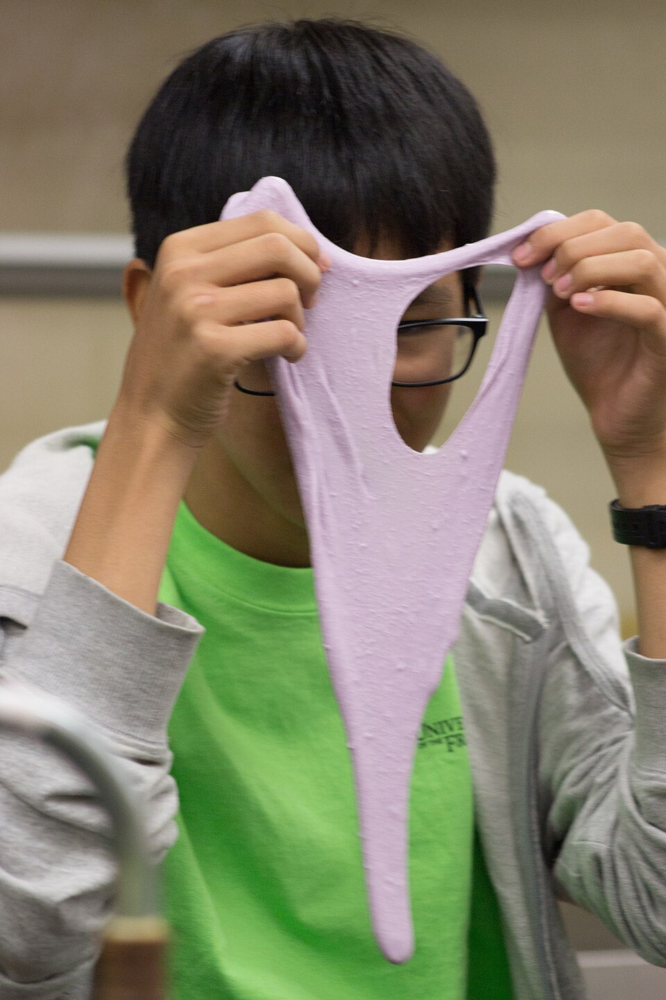

スライム
洗濯のりとホウ砂の水を混ぜて、のびる・ちぎれる・はねるの違いを確かめます。色は8色から1つ。
- 回
- 12月5日（土）・13日（日） 10:30〜11:30
- 対象
- 年長〜小学2年（大人の付き添いが要ります）
- 定員
- 各回 20人
- 材料費
- 1人 200円
- 持ち帰る物
- スライム（袋は館で用意します）
写真：大学の科学の催しでスライムをのばす男の子（カナダ）。科学館の参加者ではありません。University of the Fraser Valley／Wikimedia Commons／CC BY 2.0